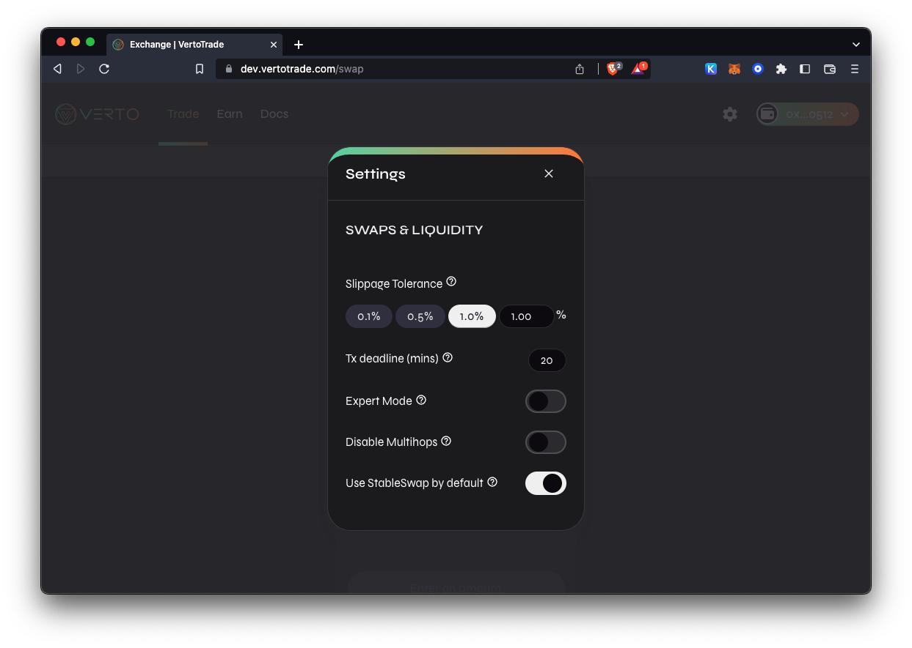

#
Troubleshooting Errors
Sometimes you may find yourself facing a problem that doesn't have a clear solution. These troubleshooting tips may help you solve problems you run into.
#
Issues on the Exchange
#
INSUFFICIENT_OUTPUT_AMOUNT
The transaction cannot succeed due to error: VertoRouter: INSUFFICIENT_OUTPUT_AMOUNT. This is probably an issue with one of the tokens you are swapping.
the transaction cannot succeed due to error: execution reverted: pancakerouter: insufficient_output_amount.
You're trying to swap tokens, but your slippage tolerance is too low or liquidity is too low.
- Refresh your page and try again later.
- Try trading a smaller amount at one time.
- Increase your slippage tolerance:
- Tap the settings icon on the liquidity page.
- Increase your slippage tolerance a little and try again. 
- Lastly, try inputting an amount with fewer decimal places.
This usually happens when trading tokens with low liquidity.
That means there isn't enough of one of the tokens you're trying to swap in the Liquidity Pool: it's probably a small-cap token that few people are trading.
However, there's also the chance that you're trying to trade a scam token which cannot be sold. In this case, VertoTrade isn't able to block a token or return funds.
#
INSUFFICIENT_A_AMOUNT or INSUFFICIENT_B_AMOUNT
Fail with error 'VertoRouter: INSUFFICIENT_A_AMOUNT'
or
Fail with error 'VertoRouter: INSUFFICIENT_B_AMOUNT'
You're trying to add/remove liquidity from a liquidity pool (LP), but there isn't enough of one of the two tokens in the pair.
Refresh your page and try again, or try again later.
Still doesn't work?
- Tap the settings icon on the liquidity page.
- Increase your slippage tolerance a little and try again.
The error is caused by trying to add or remove liquidity for a liquidity pool (LP) with an insufficient amount of token A or token B (one of the tokens in the pair).
It might be the case that prices are updating too fast when and your slippage tolerance is too low.


#
VertoRouter: EXPIRED
The transaction cannot succeed due to error: VertoRouter: EXPIRED. This is probably an issue with one of the tokens you are swapping.
Try again, but confirm (sign and broadcast) the transaction as soon as you generate it.
This happened because you started making a transaction, but you didn't sign and broadcast it until it was past the deadline. That means you didn't hit "Confirm" quickly enough.
#
Verto: K
The transaction cannot succeed due to error: Verto: K. This is probably an issue with one of the tokens you are swapping.
Try modifying the amount on “To” field. Therefore putting "(estimated)" symbol on “From”. Then initiate the swap immediately.
This usually happen when you are trying to swap a token with its own fee.
#
Verto: TRANSFER_FAILED
The transaction cannot succeed due to error: execution reverted: Verto: TRANSFER_FAILED.
Make sure you have 30% more tokens in your wallet than you intend to trade, or try to trade a lower amount. If you want to sell the maximum possible, try 70% or 69% instead of 100%.
Caused by the design of Restorative Rebase tokens like tDoge or tBTC.
Understand how restorative rebase tokens work.
Another possible cause of this issue is the malicious token issuer just suspended the trading for their token. Or they made selling action only possible for selected wallet addresses. Please always do your own research to avoid any potential fraud. If the token you are trying to swap but failed with this error code is coming from an airdrop, that is most likely a scam. Please do not perform any token approval or follow any links, your fund may be at risk if you try to do so.
#
Transaction cannot succeed
Try trading a smaller amount, or increase slippage tolerance via the settings icon and try again. This is caused by low liquidity.
#
Price Impact too High
Try trading a smaller amount, or increase slippage tolerance via the settings icon and try again. This is caused by low liquidity.
#
Execution reverted: TransferHelper: TRANSFER_FROM_FAILED.
The transaction cannot succeed due to error: execution reverted: TransferHelper: TRANSFER_FROM_FAILED.
When trying to swap tokens, the transaction fails and this error message is displayed. This error has been reported across platforms.
- Check to make sure you have sufficient funds available.
- Ensure you have given the contract allowance to spend the amount of funds you're attempting to trade with.
This error happens when trading tokens with insufficient allowance, or when a wallet has insufficient funds.\
#
Issues with Farms
#
Fail with error 'ds-math-sub-underflow'
You've run out of allowance of your LP token allowance to the OptimusMercator contract.
Use token approval manager like unrekt or BscScan to
#
Issues with Pools
#
Out of Gas error
Warning! Error encountered during contract execution [out of gas]
You have set a low gas limit when trying to make a transaction.
Try manually increasing the gas limit (not gas price!) in your wallet before signing the transaction.
A limit of 200000 is usually enough.
The above example is from Metamask; check your wallet's documentation if you aren't sure how to adjust the gas limit.
Basically, your wallet (Metamask, Coinabase, etc.) can't finish what it's trying to do.
Your wallet estimates that the gas limit is too low, so the function call runs out of gas before the function call is finished.
#
Other issues
#
Provider Error
Provider Error
No provider was found
This happens when you try to connect via a browser extension like MetaMask or Binance Chain Wallet, but you haven’t installed the extension.
Install the official browser extension to connect, or read our guide on how to connect a wallet to VertoTrade.
#
Unsupported Chain ID
Switch your chain to Rebuschain. Check your wallet's documentation for a guide if you need help.
#
Already processing eth_requestAccounts. Please wait
Make sure you are signed in to your wallet app and it's connected to Rebuschain.
#
Internal JSON-RPC errors
"MetaMask - RPC Error: Internal JSON-RPC error. estimateGas failed removeLiquidityETHWithPermitSupportingFeeOnTransferTokens estimateGas failed removeLiquidityETHWithPermit "
Happens when trying to remove liquidity on some tokens via Metamask. Root cause is still unknown. Try using an alternative wallet.
Internal JSON-RPC error. { "code": -32000, "message": "insufficient funds for transfer" } - Please try again.
You don't have enough BNB to pay for the transaction fees. You need more BEP-20 network BNB in your wallet.
#
Error: [ethjs-query]
Error: [ethjs-query] while formatting outputs from RPC '{"value":{"code":-32603,"data":{"code":-32000,"message":"transaction underpriced"}}}"
Increase the gas limit for the transaction in your wallet. Check your wallet's documentation to learn how to increase gas limit.
Swap failed: Error: [ethjs-query] while formatting outputs from RPC '{"value":{"code":-32603,"data":{"code":-32603,"message":"handle request error"}}}'
Cause unclear. Try these steps before trying again:
- Increase gas limit
- Increase slippage
- Clear cache